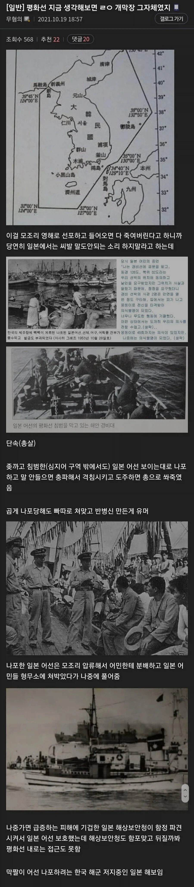

저때 한국 해군이랄게 없었을건데
해경?
손원일 제독이 해안경비대 세웠었음
상대는 원폭맞고 패전 직후였음ㅋㅋㅋ
해적?
저때 기강을 씨게 잡았어야했는데
윗분들은 일제잔재청소 못했는데 밑에서는 확실히 하셨네
민간의용단으로 출발한 독도경비대가 단독으로 일본 해상보안청이랑 교전해도 별탈없었던 이유가 저때라 가능했던것
평화선 안쪽 다른곳에서도 줘패고있었음
독립직후+전쟁직후+가난해서 잃을게 없음
삼위일체의 개씹테토 국가 시절이라 가능하지
+분단되서 남파 간첩 색출이라는 명분도 있음
지금도 원한이 남아있는데 그때는 최고조였겠지
사실상 넘어오는 순간 너 잘걸렸다 스위치 온 인데
한놈만 걸려라 모드였을듯
여간 기합이 아니었다.